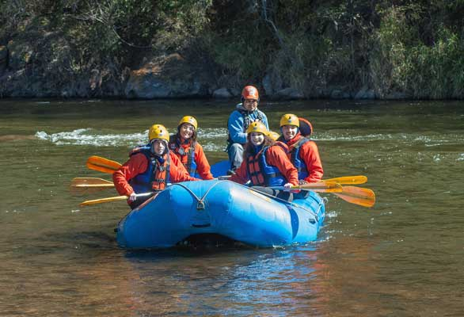
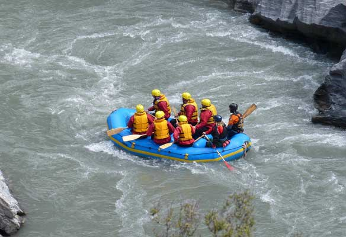

The Green River Rafting Company
Life's Better on the River!
The Green River Rafting Company plans adventures for the whole family to enjoy. We also like to aid youth groups in their adventures down the river. Our focus is on a safe outing on the river for everyone. The section of the river we run is mostly calm with several rapid areas, making it enjoyable and safe for all age groups.
Run the River from Flaming Gorge Dam to Little Hole
Our shuttle service will drop you and your raft off at the launch area at the base of Flaming Gorge Dam. Enjoy the four hour ride down the river until you get to pick-up location at Little Hole. Our shuttle will pick you up there and drive you back to our store loation in Dutch John.
You'll Love Rafting the River With Us!!
We have been helping people enjoy the Green River for over 30 years. Let us help you enjoy the rafting experience of a lifetime at the Green River Rafting Company.